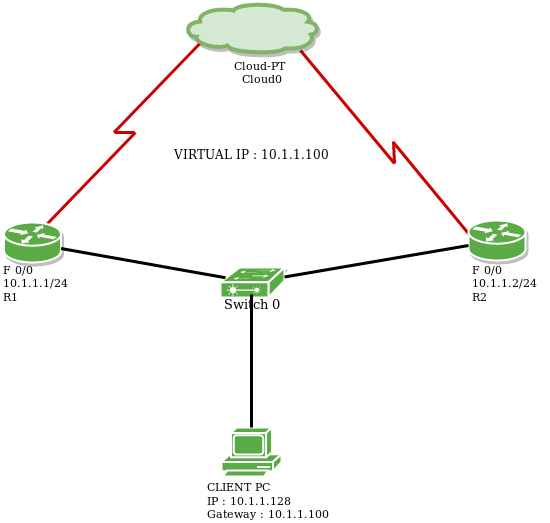

Hot Standby Router Protocol (HSRP) is a CISCO proprietary protocol, which provides redundancy for a local subnet. In HSRP, two or more routers gives an illusion of a virtual router.
HSRP allows you to configure two or more routers as standby routers and only a single router as active router at a time. All the routers in a single HSRP group shares a single MAC address and IP address, which acts a default gateway to the local network. The Active router is responsible for forwarding the traffic. If it fails, the Standby router takes up all the responsibilities of the active router and forwards the traffic.
Some important terms related to HSRP :
- Virtual IP : IP address from local subnet is assigned as default gateway to all local hosts in the network.
- Virtual MAC address : MAC address is generated automatically by HSRP. The first 24 bits will be default CISCO address (i.e. 0000.0c). The next 16 bits are HSRP ID (i.e. 07.ac). The next 8 bits will be the group number in hexadecimal. e.g- if the group number is 10 then the last 8 bits will be 0a.
Example of virtual MAC address –0000.0c07.ac0a
- Hello messages : Periodic messages exchanged by active and standby routers. These messages are exchanged after every 3 seconds telling the state of router.
- Hold down timer : Its default value is 10 seconds i.e roughly 3 times the value of hello message. This timer tells us about the router that how much time will the standby router waits for hello message if it is not received on time.
Note : If the active router fails then the standby router will become the active router.
- Priority : By default, the priority value is 100. It is helpful when the active router comes back after falling down, we can change the priority of standby router (which has become the active router after the original active router is down) to less than 100 therefore it again becomes standby router.
Note : The router having higher priority will become the active router.
- Preempt : It is a state in which the standby router automatically becomes the active router.
WORKING :
Members having same group ID are the members of same group. One of the member of the group will be elected as the active router while others remain as standby routers. The virtual IP is configured as default gateway of all the hosts in the local subnet and the active router is responsible for forwarding the traffic of local hosts. If the active router goes down then the hello messages are not exchanged between the active and the standby routers therefore the standby router waits until the hold down timer time. As soon as the hold down time is finished, the standby router will become the active router and takes up all the responsibilities of active router. This is known as preempt.
If in case the original active router comes back then we can decrease the priority of the standby router so that it will become the standby router again.
Hot Standby Router Protocol (HSRP) has 2-versions :
version 1 : The messages are multicast at 224.0.0.2 and uses the UDP port 1985. This version allows group number range from 0 to 255.
version 2 : The messages are multicast at 224.0.0.102 and uses the UDP port 1985. This version allows group number range from 0 to 4095.
CONFIGURATION :

Consider above given topology. There are 2 routers named R1 and R2. IP address of R1 (f 0/0) is 10.1.1.1/24 and R2 (f 0/0) is 10.1.1.2/24.
Assigning IP address to router R1.
r1# int fa0/0 r1# ip add 10.1.1.1 255.255.255.0
Assigning IP address to router R2.
r2# int fa0/0 r2# ip address 10.1.1.2 255.255.255.0
Now, Let’s provide virtual IP address (10.1.1.100), group name HSRP_TEST, group number 1and priority 110. Also, preempt has been enabled i.e. if the active router goes down then the standby router automatically becomes the active router.
r1# standby 1 ip 10.1.1.100 r1# standby 1 name HSRP_TEST r1# standby 1 priority 110 r1# standby 1 preempt
Now, we will provide virtual IP address (10.1.1.100), group name HSRP_TEST and priority 100. Also, group number 1 and preempt has been enabled.
r2# int fa0/0 r2# standby 1 ip 10.1.1.100 r2# standby 1 name HSRP_TEST r2# standby 1 priority 100 r2# standby 1 preempt
Note : As we have provided priority 110 to r1, therefore it will become the active router.